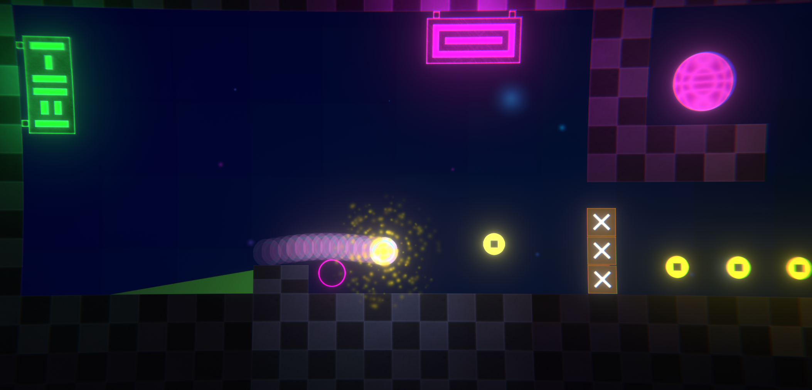
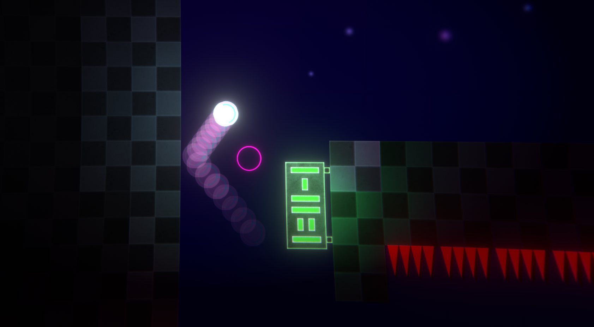

Overview

NE-P10 is a casual platformer in which the goal is to reach the end of the level by controlling a Ball using only forcewaves. I made this game to reinforce my Game Feel skills, I wanted to make a juicy game that felt really good to play.
Progress

Simple and short game with a few levels and a very basic scoring system. It's fully playable from start to finish.
Inspired By:
Angry Birds, Pinball, Katana Zero